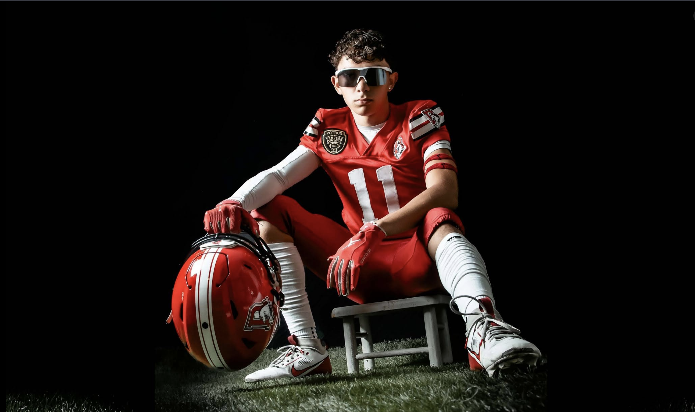

TU MARCA EN MANOS DE INFLUENCERS FIT TODOS LOS DÍAS
Enero es la temporada más fuerte del año para comer bien y empezar el gimnasio. En Captoora Biogen integramos a una cohorte de atletas y creadores de Monterrey (8K a 25K+ seguidores) que documentarán su transformación durante 4 a 12 semanas con fotografía profesional, nutrióloga titular, gimnasio y suplementos. Queremos que tu cocina sea la alimentación oficial del programa.
Antes de arrancar con los creadores, el equipo de Captoora Studio va a tu cocina o sucursal para hacer una sesión fotográfica profesional de tus platillos y espacio, lista para tu menú, Uber Eats / Rappi / DiDi y redes. Conoce nuestro nivel en: https://captoora.studio/sports

FOTOGRAFÍA EDITORIAL · DÍA 1 INCLUIDA1. QUÉ RECIBE TU MARCA EN ESTA ALIANZA
Fotografía editorial con iluminación controlada de tus platillos estrella, empaques y cocina para elevar tu tasa de pedido en apps, Google Maps e Instagram.
Cada influencer publica por contrato 1 historia diaria (mín. 15s) mostrando sus platillos con etiqueta a tu marca durante las 4 a 12 semanas del reto.
Además de los influencers, quienes contratan el programa Captoora Biogen como público general reciben acceso preferencial a tu menú y planes semanales.


 COCA-COLA FEMSA · TECATE · PODER JUDICIAL NL
COCA-COLA FEMSA · TECATE · PODER JUDICIAL NL